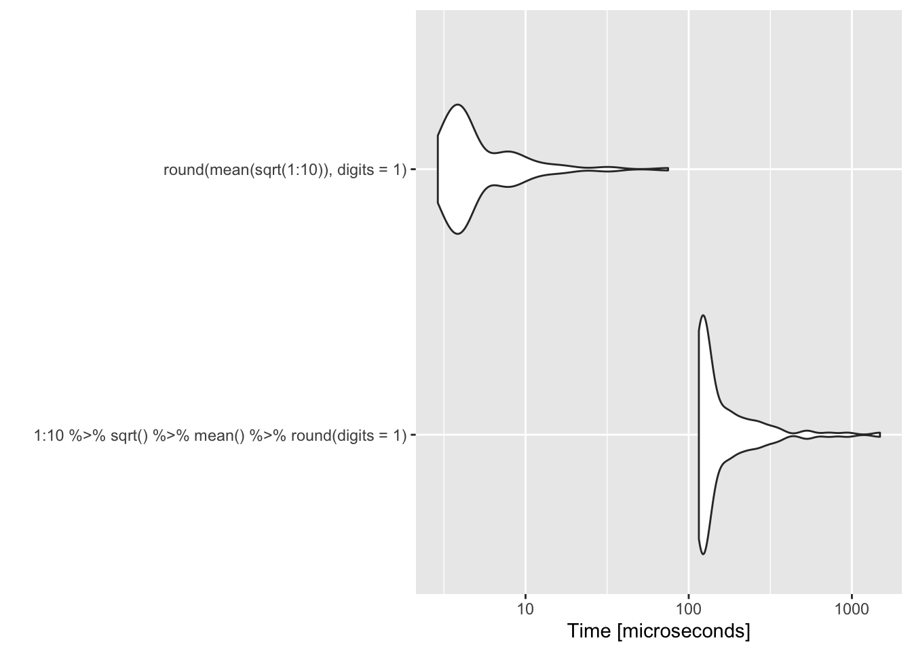
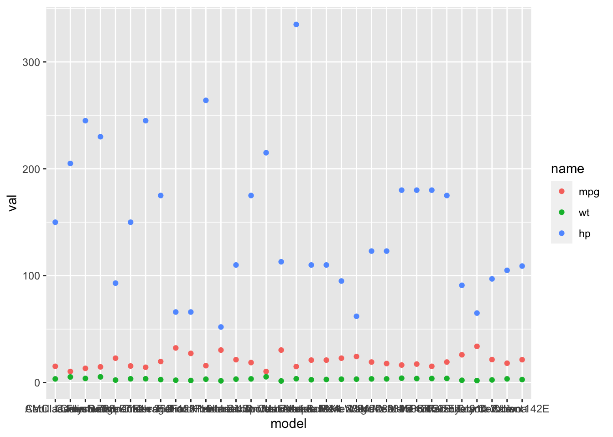
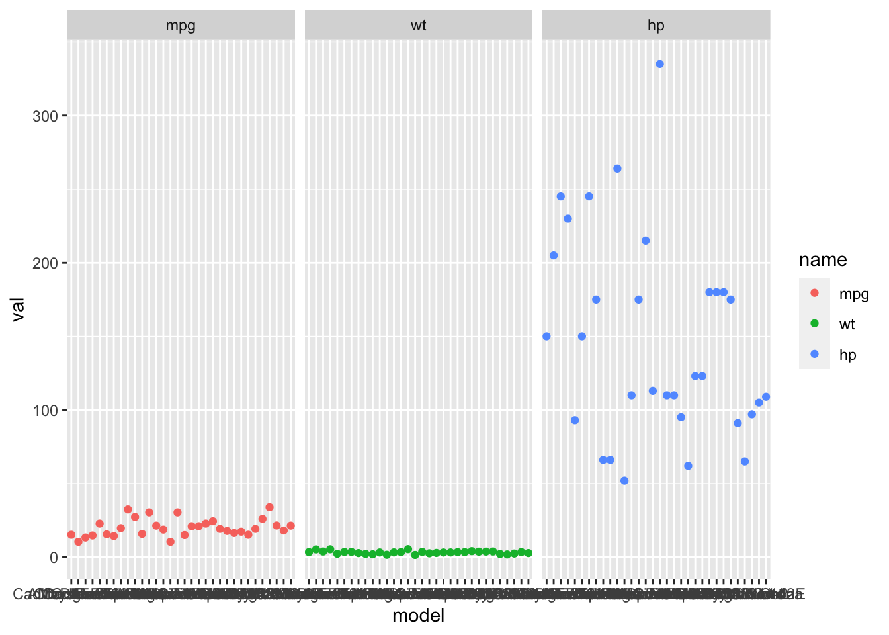

Week 9: Intro to piping and tidyverse data wrangling
This week I will give a brief introduction to piping and data wrangling with tidyr and tidyverse verbs. I’ll compare how to do different data-wrangles with tidyverse versus apply() or a for loop.
library(dplyr)
library(tidyr)
library(ggplot2)Piping
You already use the concept of piping, but you do it with parentheses. Your pipe in this case goes from inside to outside.
fun4(fun3(fun2(fun1(x))))x is our initial object. We apply fun1() to that. Then we apply fun2() to fun1(x). Then we apply fun3() to fun2(fun1(x)). etc.
This has many problems.
- You will lose track of your parentheses and waste much time sorting out where you lost one of your parentheses.
- You are limited in how many levels you can add without your code being unreadable as it stretches quickly to multiple lines.
- We don’t read inside to outside though from our math education, we are used to that (sort of).
Piping is just a different way to write the same thing but left to right like we read (in English).
x %>% fun1() %>% fun2() %>% fun3() %>% fun4()Example:
1:10 %>% sqrt() %>% mean() %>% round(digits=1) ## [1] 2.2That’s the same as
round(mean(sqrt(1:10)),digits=1) ## [1] 2.2Upsides
- It is used a lot in the tidyverse so you should be aware of how it works.
- It works well in the tidyverse.
- Can be more readable
- Makes it easy to avoid intermediate variables (
tmpandfoo)
Downsides
- It’s is easy to write code that is hard to understand. It tends to hide where the object on the left is going to in the function on the right.
So you see code like this
fun <- function(a=1, b=10){c(max(a), min(b))}
a <- 1:10
a %>% fun(a^2)## [1] 10 1and you have to go research fun to discover that this is fun(a=a^2, b=a).
You can spend hours trying to solve your piping issue when you could immediately write down code using intermediate values.
It’s really slow.
library(microbenchmark)
bm <- microbenchmark(1:10 %>% sqrt() %>% mean() %>% round(digits=1), round(mean(sqrt(1:10)),digits=1) )
ggplot2::autoplot(bm)
- You must stay hyper-alert as to the names in the data frame you are working with. You might not have created this data frame. This may be a function you wrote to take any data frame from a user…. Otherwise, bad things like this can happen.
fun <- function(x, cyl=1){
x %>% transform(new = mpg^cyl) %>% select(mpg, new)
}Works great!
df <- data.frame(mpg=runif(10, 10, 30))
fun(df, cyl=0.5)## mpg new
## 1 27.22645 5.217897
## 2 29.24771 5.408115
## 3 14.14723 3.761280
## 4 19.42818 4.407741
## 5 11.22577 3.350488
## 6 23.91743 4.890545
## 7 25.27650 5.027574
## 8 19.50322 4.416245
## 9 12.60077 3.549756
## 10 24.47181 4.946899Why, why? It didn’t complain but this is wrong!
fun(mtcars, cyl=0.5)## mpg new
## Mazda RX4 21.0 8.576612e+07
## Mazda RX4 Wag 21.0 8.576612e+07
## Datsun 710 22.8 2.702336e+05
## Hornet 4 Drive 21.4 9.604674e+07
## Hornet Sportabout 18.7 1.495316e+10
## Valiant 18.1 3.516183e+07
## Duster 360 14.3 1.748591e+09
## Merc 240D 24.4 3.544535e+05
## Merc 230 22.8 2.702336e+05
## Merc 280 19.2 5.009650e+07
## Merc 280C 17.8 3.180680e+07
## Merc 450SE 16.4 5.233001e+09
## Merc 450SL 17.3 8.023592e+09
## Merc 450SLC 15.2 2.849369e+09
## Cadillac Fleetwood 10.4 1.368569e+08
## Lincoln Continental 10.4 1.368569e+08
## Chrysler Imperial 14.7 2.180413e+09
## Fiat 128 32.4 1.101996e+06
## Honda Civic 30.4 8.540717e+05
## Toyota Corolla 33.9 1.320684e+06
## Toyota Corona 21.5 2.136751e+05
## Dodge Challenger 15.5 3.331606e+09
## AMC Javelin 15.2 2.849369e+09
## Camaro Z28 13.3 9.790686e+08
## Pontiac Firebird 19.2 1.846757e+10
## Fiat X1-9 27.3 5.554572e+05
## Porsche 914-2 26.0 4.569760e+05
## Lotus Europa 30.4 8.540717e+05
## Ford Pantera L 15.8 3.883799e+09
## Ferrari Dino 19.7 5.845173e+07
## Maserati Bora 15.0 2.562891e+09
## Volvo 142E 21.4 2.097274e+05Data Wrangling
Lots of resources on the web if this is something you need to know in depth. See this course book, this course, Hadley book (though I like the courses better), and many more.
I’m going to cover two topics which come up often when using ggplot and also fitting models.
Long and wide data frames
Wide is what you need for say lm(). You have your response variable in one column and then your predictor variables in other columns.
df <- subset(mtcars, select=c(mpg, wt, hp, carb))
df$model <- rownames(mtcars)
head(df)## mpg wt hp carb model
## Mazda RX4 21.0 2.620 110 4 Mazda RX4
## Mazda RX4 Wag 21.0 2.875 110 4 Mazda RX4 Wag
## Datsun 710 22.8 2.320 93 1 Datsun 710
## Hornet 4 Drive 21.4 3.215 110 1 Hornet 4 Drive
## Hornet Sportabout 18.7 3.440 175 2 Hornet Sportabout
## Valiant 18.1 3.460 105 1 ValiantFit with lm().
fit <- lm(mpg ~ wt + hp, data=df)
summary(fit)##
## Call:
## lm(formula = mpg ~ wt + hp, data = df)
##
## Residuals:
## Min 1Q Median 3Q Max
## -3.941 -1.600 -0.182 1.050 5.854
##
## Coefficients:
## Estimate Std. Error t value Pr(>|t|)
## (Intercept) 37.22727 1.59879 23.285 < 2e-16 ***
## wt -3.87783 0.63273 -6.129 1.12e-06 ***
## hp -0.03177 0.00903 -3.519 0.00145 **
## ---
## Signif. codes: 0 '***' 0.001 '**' 0.01 '*' 0.05 '.' 0.1 ' ' 1
##
## Residual standard error: 2.593 on 29 degrees of freedom
## Multiple R-squared: 0.8268, Adjusted R-squared: 0.8148
## F-statistic: 69.21 on 2 and 29 DF, p-value: 9.109e-12Long form is what ggplot wants. Usually I have to ponder a bit before I decide how to make my long form data frame. There is not just “one” that you could make from your wide form data frame.
Let’s make a plot of the red, green and blue columns. We want the points to be red, green or blue.
plot(df$mpg, col="red", ylim=c(0,200))
points(df$wt, col="green")
points(df$hp, col="blue")Same idea but let’s plot versus the carburator number. Let’s make a plot of the red, green and blue columns. We want the points to be red, green or blue.
plot(df$carb, df$mpg, col="red", ylim=c(0,200))
points(df$carb, df$wt, col="green")
points(df$carb, df$hp, col="blue")
Now let’s do this in ggplot. What values do we want in the aes() function? Those need to be columns. aes(x=..., y=..., col=....)
data.frame(col=name.of.thing.we.plot, y=value.of.thing.we.plot, x=x.value)So we’ll have a column of x (carb or model or 1:n), a column for our y (mpg,wt,hp) and a column for names (“mpg”,“wt”,“hb”).
df.long <- data.frame()
a <- data.frame(model=df$model, val=df$mpg, name="mpg", carb=df$carb)
df.long <- rbind(df.long, a)
a <- data.frame(model=df$model, val=df$wt, name="wt", carb=df$carb)
df.long <- rbind(df.long, a)
a <- data.frame(model=df$model, val=df$hp, name="hp", carb=df$carb)
df.long <- rbind(df.long, a)
df.long## model val name carb
## 1 Mazda RX4 21.000 mpg 4
## 2 Mazda RX4 Wag 21.000 mpg 4
## 3 Datsun 710 22.800 mpg 1
## 4 Hornet 4 Drive 21.400 mpg 1
## 5 Hornet Sportabout 18.700 mpg 2
## 6 Valiant 18.100 mpg 1
## 7 Duster 360 14.300 mpg 4
## 8 Merc 240D 24.400 mpg 2
## 9 Merc 230 22.800 mpg 2
## 10 Merc 280 19.200 mpg 4
## 11 Merc 280C 17.800 mpg 4
## 12 Merc 450SE 16.400 mpg 3
## 13 Merc 450SL 17.300 mpg 3
## 14 Merc 450SLC 15.200 mpg 3
## 15 Cadillac Fleetwood 10.400 mpg 4
## 16 Lincoln Continental 10.400 mpg 4
## 17 Chrysler Imperial 14.700 mpg 4
## 18 Fiat 128 32.400 mpg 1
## 19 Honda Civic 30.400 mpg 2
## 20 Toyota Corolla 33.900 mpg 1
## 21 Toyota Corona 21.500 mpg 1
## 22 Dodge Challenger 15.500 mpg 2
## 23 AMC Javelin 15.200 mpg 2
## 24 Camaro Z28 13.300 mpg 4
## 25 Pontiac Firebird 19.200 mpg 2
## 26 Fiat X1-9 27.300 mpg 1
## 27 Porsche 914-2 26.000 mpg 2
## 28 Lotus Europa 30.400 mpg 2
## 29 Ford Pantera L 15.800 mpg 4
## 30 Ferrari Dino 19.700 mpg 6
## 31 Maserati Bora 15.000 mpg 8
## 32 Volvo 142E 21.400 mpg 2
## 33 Mazda RX4 2.620 wt 4
## 34 Mazda RX4 Wag 2.875 wt 4
## 35 Datsun 710 2.320 wt 1
## 36 Hornet 4 Drive 3.215 wt 1
## 37 Hornet Sportabout 3.440 wt 2
## 38 Valiant 3.460 wt 1
## 39 Duster 360 3.570 wt 4
## 40 Merc 240D 3.190 wt 2
## 41 Merc 230 3.150 wt 2
## 42 Merc 280 3.440 wt 4
## 43 Merc 280C 3.440 wt 4
## 44 Merc 450SE 4.070 wt 3
## 45 Merc 450SL 3.730 wt 3
## 46 Merc 450SLC 3.780 wt 3
## 47 Cadillac Fleetwood 5.250 wt 4
## 48 Lincoln Continental 5.424 wt 4
## 49 Chrysler Imperial 5.345 wt 4
## 50 Fiat 128 2.200 wt 1
## 51 Honda Civic 1.615 wt 2
## 52 Toyota Corolla 1.835 wt 1
## 53 Toyota Corona 2.465 wt 1
## 54 Dodge Challenger 3.520 wt 2
## 55 AMC Javelin 3.435 wt 2
## 56 Camaro Z28 3.840 wt 4
## 57 Pontiac Firebird 3.845 wt 2
## 58 Fiat X1-9 1.935 wt 1
## 59 Porsche 914-2 2.140 wt 2
## 60 Lotus Europa 1.513 wt 2
## 61 Ford Pantera L 3.170 wt 4
## 62 Ferrari Dino 2.770 wt 6
## 63 Maserati Bora 3.570 wt 8
## 64 Volvo 142E 2.780 wt 2
## 65 Mazda RX4 110.000 hp 4
## 66 Mazda RX4 Wag 110.000 hp 4
## 67 Datsun 710 93.000 hp 1
## 68 Hornet 4 Drive 110.000 hp 1
## 69 Hornet Sportabout 175.000 hp 2
## 70 Valiant 105.000 hp 1
## 71 Duster 360 245.000 hp 4
## 72 Merc 240D 62.000 hp 2
## 73 Merc 230 95.000 hp 2
## 74 Merc 280 123.000 hp 4
## 75 Merc 280C 123.000 hp 4
## 76 Merc 450SE 180.000 hp 3
## 77 Merc 450SL 180.000 hp 3
## 78 Merc 450SLC 180.000 hp 3
## 79 Cadillac Fleetwood 205.000 hp 4
## 80 Lincoln Continental 215.000 hp 4
## 81 Chrysler Imperial 230.000 hp 4
## 82 Fiat 128 66.000 hp 1
## 83 Honda Civic 52.000 hp 2
## 84 Toyota Corolla 65.000 hp 1
## 85 Toyota Corona 97.000 hp 1
## 86 Dodge Challenger 150.000 hp 2
## 87 AMC Javelin 150.000 hp 2
## 88 Camaro Z28 245.000 hp 4
## 89 Pontiac Firebird 175.000 hp 2
## 90 Fiat X1-9 66.000 hp 1
## 91 Porsche 914-2 91.000 hp 2
## 92 Lotus Europa 113.000 hp 2
## 93 Ford Pantera L 264.000 hp 4
## 94 Ferrari Dino 175.000 hp 6
## 95 Maserati Bora 335.000 hp 8
## 96 Volvo 142E 109.000 hp 2Now we can plot with ggplot.
ggplot(df.long, aes(x=model, y=val, col=name)) + geom_point()
And we can easily do panels.
ggplot(df.long, aes(x=model, y=val, col=name)) + geom_point() +
facet_wrap(~name)
Pivoting
So creating your long data frames like that would get tidieous and inefficient. The tidyr package has functions to make this easier.
pivot_longer
pivot_longer(
data frame name,
cols = what columns will you stack or pivot,
names_to = colname for the column with the column names that your stacked,
values_to = colname for the column with the values
)df.long2 <-
pivot_longer(
df,
cols = c("mpg", "wt", "hp"),
names_to = "name",
values_to = "val"
)df.long2## # A tibble: 96 x 4
## carb model name val
## <dbl> <chr> <chr> <dbl>
## 1 4 Mazda RX4 mpg 21
## 2 4 Mazda RX4 wt 2.62
## 3 4 Mazda RX4 hp 110
## 4 4 Mazda RX4 Wag mpg 21
## 5 4 Mazda RX4 Wag wt 2.88
## 6 4 Mazda RX4 Wag hp 110
## 7 1 Datsun 710 mpg 22.8
## 8 1 Datsun 710 wt 2.32
## 9 1 Datsun 710 hp 93
## 10 1 Hornet 4 Drive mpg 21.4
## # … with 86 more rowsIt changed the order our names but that’s ok. We can fix that if needed.
ggplot(df.long, aes(x=model, y=val, col=name)) + geom_point() +
facet_wrap(~name)
It changed the order our names but that’s ok. We can fix that if needed.
df.long$name <- factor(df.long$name, levels=c("mpg", "wt", "hp"))
ggplot(df.long, aes(x=model, y=val, col=name)) + geom_point() +
facet_wrap(~name) +
theme(axis.text.x=element_blank())
Read ?tidyr::pivot_longer to learn more options but this will be all you need most of the time.
pivot_wider
pivot_wider(
data frame name,
names_from = what column has the column names
values_from = what column has the values
) pivot_wider(
df.long,
names_from = "name",
values_from = "val"
)## # A tibble: 32 x 5
## model carb mpg wt hp
## <fct> <dbl> <dbl> <dbl> <dbl>
## 1 Mazda RX4 4 21 2.62 110
## 2 Mazda RX4 Wag 4 21 2.88 110
## 3 Datsun 710 1 22.8 2.32 93
## 4 Hornet 4 Drive 1 21.4 3.22 110
## 5 Hornet Sportabout 2 18.7 3.44 175
## 6 Valiant 1 18.1 3.46 105
## 7 Duster 360 4 14.3 3.57 245
## 8 Merc 240D 2 24.4 3.19 62
## 9 Merc 230 2 22.8 3.15 95
## 10 Merc 280 4 19.2 3.44 123
## # … with 22 more rowsBTW, you will normally see the function called with piping.
df.long %>%
pivot_wider(
names_from = "name",
values_from = "val"
)Tidyverse verbs
Read up on tidyverse verbs here.
Summary
ggplot can make your plotting workflow more efficient and much much faster. No more hassling with layouts. It takes a little while to get the hang of, but you do not need to be a ggplot wizard. Just the basics here will take you a long way. Google will answer any other questions that you have.
A good set of basic commands:
tidyr::pivot_longertidyr::pivot_wider
Comments
I rarely use piping. Why?
subset(df, x==1)is implicit because it is implying that there is anxcolumn indfbut that code will actually work ifxis not indf. If you are a package writer, the check will complain about that vagueness.And I rarely use dplyr, tidyr, or tidyverse verbs.
Whereas learning ggplot2 has made my plotting much, much faster, I can’t say the same with data-wrangling with tidyverse except for a few functions that I use to help out with ggplot.